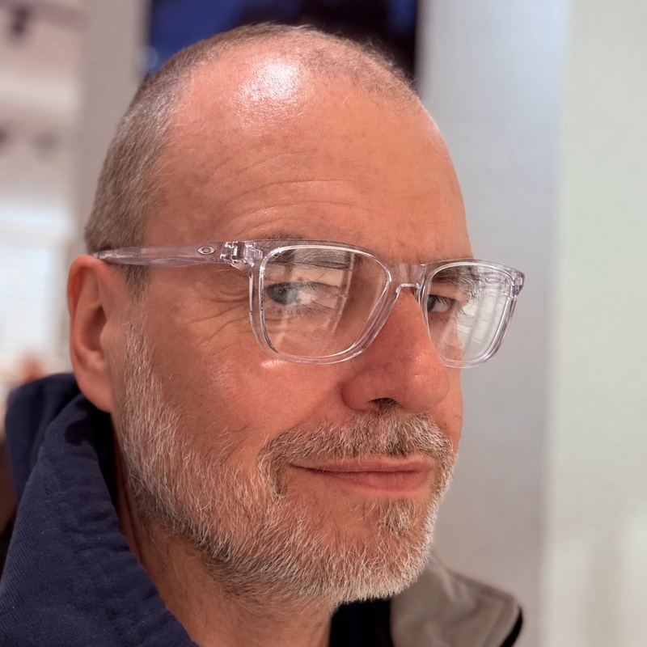

Helmut Hoffer von Ankershoffen
Gründer & Mentor — helmguild
Kundenorientierter Engineering Leader. Sechsundzwanzig Jahre am Steuer — über regulierte Industrien, Hyperscale-Plattformen, Founder-Mode-Startups und eine landesweit prägende Suchmaschine, bevor „Suche" eine Kategorie war.
Das Handwerk des Steuerns habe ich gelernt, indem ich es ausgeübt habe: liefern unter realem Wetter, Kurs halten, während Wind, Strömung und Mannschaft das Schiff aus der Bahn drücken wollten. Helmguild ist der Ort, an dem ich dieses Handwerk nun von Hand zu Hand an andere Engineering Leader weitergebe. Lesen Sie das Manifest und die AMMP-RFC, die wir mit Pepe Arturo geschrieben haben, um dieses Mentoring über die Agent-Schicht zu skalieren.
Karriere, in Kürze
- Managing Streaming bei Snowflake Inc.
- SVP Product & Engineering, Aignostics — Digitale Pathologie-KI, Charité-Spin-off. Reife Produkt- & Engineering-Organisation aufgebaut, erste SaaS-Anwendung gelauncht, ISO 13485 und 27001 konform.
- Software Development Manager, Amazon Inc. Music ML-Plattform & -Teams; zentralen Content-Orchestrator etabliert, der über 20 personalisierte Erlebnisse bedient, zentrales Feature-Repository für Machine Learning und heuristische Anwendungsfälle aufgebaut.
- Founder / CTO Mode — WeGreen, 20steps, Campanda. Nachhaltigkeit, RAD-Frameworks, RV-Marktplatz.
- Mitgründer, CEO & CTO, Neofonie — bootstrapped auf €15M Umsatz, 100+ Engineers, vom ersten Jahr an profitabel. Kunden von Axel Springer bis VW.
- Chefarchitekt, Fireball — Deutschlands erste Suchmaschine. TU Berlin: MSc Informatik summa cum laude, BSc Mathematik. Mit-Erfinder eines Patents zur Relevanzbewertung — später zitiert von Microsoft, Bing, Yahoo.
Operating Principles
Acht Prinzipien, an den richtigen Tagen in Spannung zueinander. Dieselben acht, die Snowflake als Unternehmenswerte veröffentlicht — sie benennen, wie ich ohnehin operiere: im Leben, in der Arbeit, im Ironman-Training. Genau deshalb passt es.
- Put Customers First. Erst zuhören, dann bauen, dann liefern.
- Integrity Always. Sag das Schwere. Geh dann ganz rein.
- Think Big. Heb schwerer als gestern.
- Be Excellent. Dieselbe Runde — schneller, sauberer.
- Make Each Other The Best. Kalibrieren, nicht konkurrieren.
- Get It Done. Der Berg bewegt sich nicht; du bewegst dich.
- Own It. Lauf dein eigenes Rennen.
- Embrace Each Other's Differences. Verschiedene Tempi, derselbe Weg.
Abseits der Tastatur
Berlin / Woltersdorf. Deutsch Muttersprache, Englisch verhandlungssicher. Verheiratet mit Sandra. Ironman 70.3 Erkner Finisher (2025); Ironman European Championship Frankfurt (Langdistanz) — 28. Juni 2026. Photographie nebenbei.